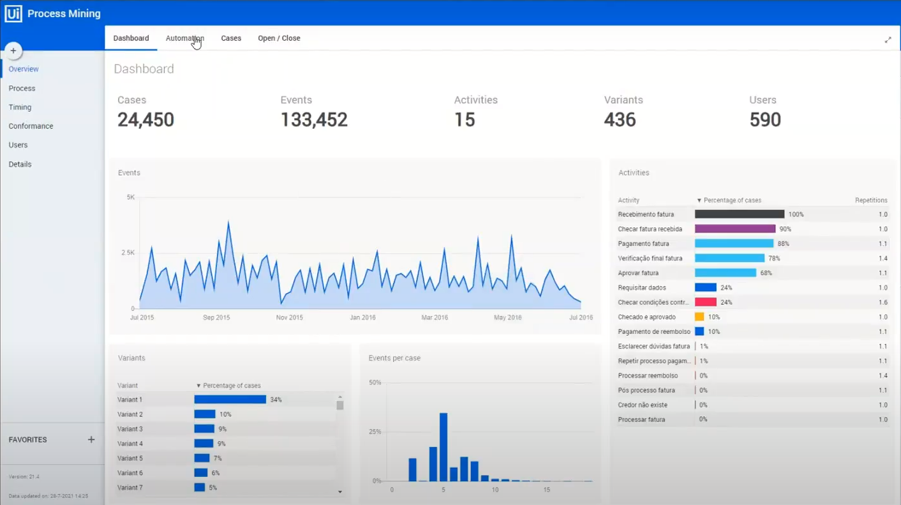
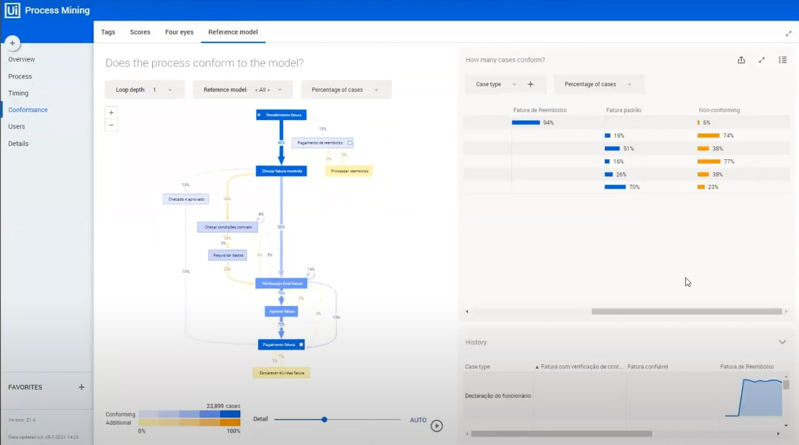

Funcionamento e Requisitos!
Extraindo os dados a partir do software de sua empresa, o algoritmo por de traz do process mining, monta o fluxo do mapeamento dos seus processos, entregando os insights através dos três pilares do process mining que chamamos de Discovery, Conformance e Enhancement.
Para seu funcionamento adequado, dependendemos de 3 elementos fundamentais:
- Casos
- Eventos
- Timestamp
Os 3 Pilares do Process Mining

Discovery
Etapa de visualização da forma como o algoritmo trabalha, através de dados analisados disponibiliza um mapeamento preciso do fluxo do processo e gráficos subsequentes. Ainda dentro da etapa de visualização, podemos observar as repetições e frequencias de casos, análises comparativas e estatísticas e o fluxo de todo o processo.

Conformance
A Etapa de conformidade, funciona após a obtenção do fluxo e dados extraídos dos processos, sendo possível realizar análises mais precisas e abrangentes para entender se tais processos estão dentro de conformidades baseados em sua área de atuação e modelo padrão atual.
Enchancement
Podemos definir como etapa de aprendizado e aprimoramento, através dos insights coletados sendo possível analisar e realizar melhorias dentro dos processos, essas melhorias abrangem alocação de recursos, automação, comportamento social e organizacional.
ONDE SE APLICA
-
 Compras
Compras
-
 Produção
Produção
-
 Logística
Logística
-
 Vendas
Vendas
-
 Financeira
Financeira
-
 RH
RH